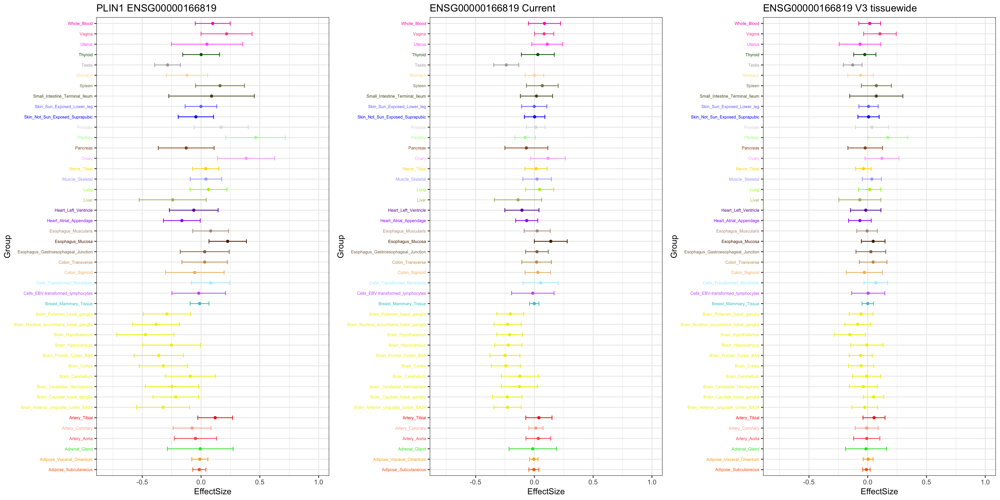
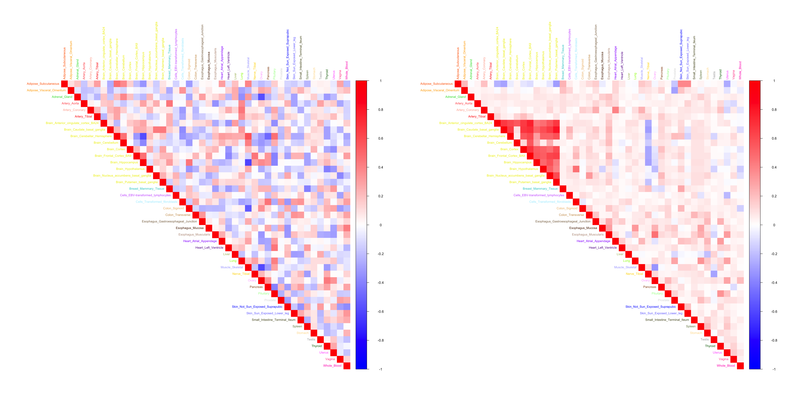

Last updated: 2019-01-23
workflowr checks: (Click a bullet for more information) ✔ R Markdown file: up-to-date
Great! Since the R Markdown file has been committed to the Git repository, you know the exact version of the code that produced these results.
✔ Environment: empty
Great job! The global environment was empty. Objects defined in the global environment can affect the analysis in your R Markdown file in unknown ways. For reproduciblity it’s best to always run the code in an empty environment.
✔ Seed:
set.seed(20181220)
The command set.seed(20181220) was run prior to running the code in the R Markdown file. Setting a seed ensures that any results that rely on randomness, e.g. subsampling or permutations, are reproducible.
✔ Session information: recorded
Great job! Recording the operating system, R version, and package versions is critical for reproducibility.
✔ Repository version: a210b81
wflow_publish or wflow_git_commit). workflowr only checks the R Markdown file, but you know if there are other scripts or data files that it depends on. Below is the status of the Git repository when the results were generated:
Ignored files:
Ignored: .DS_Store
Ignored: .Rhistory
Ignored: .Rproj.user/
Ignored: data/.DS_Store
Ignored: output/.DS_Store
Untracked files:
Untracked: code/Demo_SumstatQuery.R
Untracked: data/cor_tissues_non_ash_voom_pearson.rda
Untracked: data/gene_names_GTEX_V6.txt
Untracked: data/genewide_ash_out_tissue_mat_halfuniform_non_mode.rda
Untracked: data/order_index.rda
Untracked: data/samples_id.txt
Untracked: data/tissuewide_pearson_halfuniform_tissuewide_non_mode.rda
Untracked: output/GTExV6/
Untracked: output/corshrink_noise_gene_1.rds
| File | Version | Author | Date | Message |
|---|---|---|---|---|
| Rmd | a210b81 | zouyuxin | 2019-01-23 | wflow_publish(“analysis/CorShrinkEQTL.Rmd”) |
| html | 6604682 | zouyuxin | 2019-01-23 | Build site. |
| Rmd | a7a08cc | zouyuxin | 2019-01-23 | wflow_publish(“analysis/CorShrinkEQTL.Rmd”) |
| html | b78df8e | zouyuxin | 2019-01-23 | Build site. |
| Rmd | d881589 | zouyuxin | 2019-01-23 | wflow_publish(“analysis/CorShrinkEQTL.Rmd”) |
library(mashr)Loading required package: ashrlibrary(corrplot)corrplot 0.84 loadedlibrary(ggplot2)
library(gridExtra)gtex <- readRDS(gzcon(url("https://github.com/stephenslab/gtexresults/blob/master/data/MatrixEQTLSumStats.Portable.Z.rds?raw=TRUE")))
V.kushal.tissuewide = readRDS('output/GTExV6/V_strong_tissuewide.rds')
V.null.tissuewide = readRDS('output/GTExV6/V_corshrink_array.rds')
m_current_EZ = readRDS('output/GTExV6/m_current_EZ_post.rds')
m_V3_EZ_Current_tissuewide = readRDS('output/GTExV6/m_V3_tissuewide_EZ_Current.rds')
m_V3_EZ_Current_tissuewide$result = readRDS('output/GTExV6/m_V3_tissuewide_EZ_Current_post_weights.rds')$posterior_matrices
missing.tissues <- c(7, 8, 19, 20, 24, 25, 31, 34, 37)
gtex.colors <- read.table("https://github.com/stephenslab/gtexresults/blob/master/data/GTExColors.txt?raw=TRUE", sep = '\t', comment.char = '')[-missing.tissues, 2]
gtex.colors <- as.character(gtex.colors)sign = get_significant_results(m_current_EZ)
gene_names = dimnames(V.null.tissuewide)[[3]]
numg = 8265stronggene = data.frame(gtex$strong.b[numg,])
colnames(stronggene) = 'EffectSize'
stronggene$Group = row.names(stronggene)
stronggene$se = gtex$strong.s[numg,]
p1 = ggplot(stronggene, aes(y = EffectSize, x = Group)) +
geom_point(show.legend = FALSE, color=gtex.colors) + coord_flip() + ggtitle('PLIN1 ENSG00000166819') + ylim(c(-0.8,1)) + geom_errorbar(aes(ymin=EffectSize-1.96*se, ymax=EffectSize+1.96*se), width=0.4, show.legend = FALSE, color=gtex.colors) +
theme_bw(base_size=12) + theme(axis.text.y = element_text(colour = gtex.colors, size = 6))
stronggeneCurrent = data.frame(m_current_EZ$result$PosteriorMean[numg,])
colnames(stronggeneCurrent) = 'EffectSize'
stronggeneCurrent$Group = row.names(stronggeneCurrent)
stronggeneCurrent$se = m_current_EZ$result$PosteriorSD[numg,]
p2 = ggplot(stronggeneCurrent, aes(y = EffectSize, x = Group)) +
geom_point(show.legend = FALSE, color=gtex.colors) + ylim(c(-0.8,1)) + coord_flip() + ggtitle('ENSG00000166819 Current') +
geom_errorbar(aes(ymin=EffectSize-1.96*se, ymax=EffectSize+1.96*se), width=0.4, show.legend = FALSE, color=gtex.colors) +
theme_bw(base_size=12) + theme(axis.text.y = element_text(colour = gtex.colors, size = 6))
stronggeneV3 = data.frame(m_V3_EZ_Current_tissuewide$result$PosteriorMean[numg,])
colnames(stronggeneV3) = 'EffectSize'
stronggeneV3$Group = row.names(stronggeneV3)
stronggeneV3$se = m_V3_EZ_Current_tissuewide$result$PosteriorSD[numg,]
p3 = ggplot(stronggeneV3, aes(y = EffectSize, x = Group)) +
geom_point(show.legend = FALSE, color=gtex.colors) + ylim(c(-0.8,1)) + coord_flip() + ggtitle('ENSG00000166819 V3 Current tissuewide') +
geom_errorbar(aes(ymin=EffectSize-1.96*se, ymax=EffectSize+1.96*se), width=0.4, show.legend = FALSE, color=gtex.colors) +
theme_bw(base_size=12) + theme(axis.text.y = element_text(colour = gtex.colors, size = 6))
grid.arrange(p1, p2, p3, nrow = 1)
| Version | Author | Date |
|---|---|---|
| 6604682 | zouyuxin | 2019-01-23 |
| b78df8e | zouyuxin | 2019-01-23 |
par(mfrow=c(1,2))
col2 <- c("blue", "white", "red")
tmp = V.null.tissuewide[,,numg]
colnames(tmp) = row.names(stronggene)
row.names(tmp) = colnames(tmp)
g1 <- corrplot(tmp,
col = colorRampPalette(col2)(200),
tl.pos = "td", tl.cex = 0.5, tl.col = gtex.colors,
rect.col = "white",na.label.col = "white",
method = "color", type = "upper")
tmp = V.kushal.tissuewide[,,numg]
colnames(tmp) = row.names(stronggene)
row.names(tmp) = colnames(tmp)
g2 <- corrplot(tmp,
col = colorRampPalette(col2)(200),
tl.pos = "td", tl.cex = 0.5, tl.col = gtex.colors,
rect.col = "white",na.label.col = "white",
method = "color", type = "upper") 
| Version | Author | Date |
|---|---|---|
| b78df8e | zouyuxin | 2019-01-23 |
sessionInfo()R version 3.5.1 (2018-07-02)
Platform: x86_64-apple-darwin15.6.0 (64-bit)
Running under: macOS 10.14.2
Matrix products: default
BLAS: /Library/Frameworks/R.framework/Versions/3.5/Resources/lib/libRblas.0.dylib
LAPACK: /Library/Frameworks/R.framework/Versions/3.5/Resources/lib/libRlapack.dylib
locale:
[1] en_US.UTF-8/en_US.UTF-8/en_US.UTF-8/C/en_US.UTF-8/en_US.UTF-8
attached base packages:
[1] stats graphics grDevices utils datasets methods base
other attached packages:
[1] gridExtra_2.3 ggplot2_3.1.0 corrplot_0.84 mashr_0.2.19.0555
[5] ashr_2.2-26
loaded via a namespace (and not attached):
[1] tidyselect_0.2.5 purrr_0.2.5 lattice_0.20-38
[4] colorspace_1.4-0 htmltools_0.3.6 yaml_2.2.0
[7] rlang_0.3.1 R.oo_1.22.0 mixsqp_0.1-93
[10] pillar_1.3.1 glue_1.3.0 withr_2.1.2
[13] R.utils_2.7.0 bindrcpp_0.2.2 foreach_1.4.4
[16] plyr_1.8.4 bindr_0.1.1 stringr_1.3.1
[19] munsell_0.5.0 gtable_0.2.0 workflowr_1.1.1
[22] R.methodsS3_1.7.1 mvtnorm_1.0-8 codetools_0.2-16
[25] evaluate_0.12 labeling_0.3 knitr_1.20
[28] pscl_1.5.2 doParallel_1.0.14 parallel_3.5.1
[31] Rcpp_1.0.0 backports_1.1.3 scales_1.0.0
[34] rmeta_3.0 truncnorm_1.0-8 abind_1.4-5
[37] digest_0.6.18 stringi_1.2.4 dplyr_0.7.8
[40] grid_3.5.1 rprojroot_1.3-2 tools_3.5.1
[43] magrittr_1.5 lazyeval_0.2.1 tibble_2.0.1
[46] crayon_1.3.4 whisker_0.3-2 pkgconfig_2.0.2
[49] MASS_7.3-51.1 Matrix_1.2-15 SQUAREM_2017.10-1
[52] assertthat_0.2.0 rmarkdown_1.11 iterators_1.0.10
[55] R6_2.3.0 git2r_0.24.0 compiler_3.5.1 This reproducible R Markdown analysis was created with workflowr 1.1.1